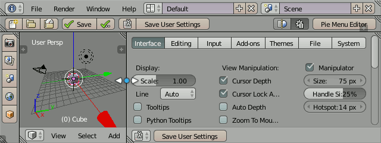
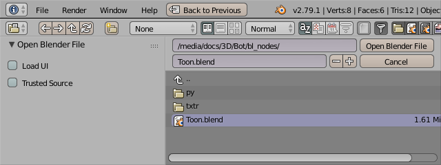

Side Panel Editor
Hiding Unused Panels
PME Toolbar
Note
It stopped working after 4.3. I am in the process of fixing this. Your support through GitHub Sponsors helps me to work on this and other features.
PME allows you to use the User Preferences area as a toolbar when its width or height is minimal:

Naming
Toolbars display popup dialog’s layout depending on its name:
Toolbar <Screen Name> <Position>
Where Screen Name and Position are optional and Position takes one of these values: Left, Right, Top, Bottom.
Examples
|
Top toolbar, all screens |
|
Right toolbar, UV Editing screen |
|
Any toolbar, 3D View Full screen |
Saving
Toolbar widgets are stored in User Preferences. The position and size of the toolbars are stored in .blend files. So in order to save your toolbars, you need to use both and commands.
By default Blender loads UI stored in .blend files. To keep the current UI (including toolbars) you need to uncheck Load UI option:
